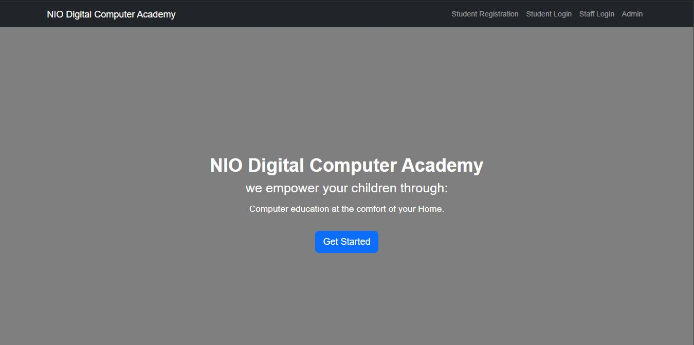
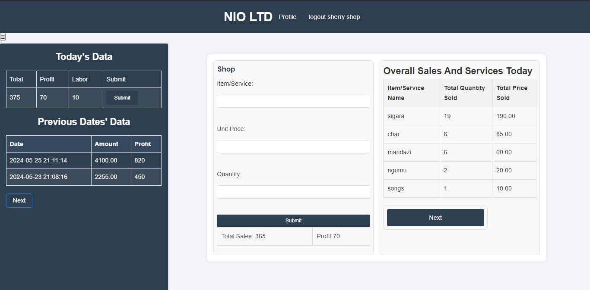

Projects and Publications

Digital Compute Academy
Training individuals in basic computer skills.

NIO BIZ Management System
A system for managing cafe business activities.

Parcel Delivery System
A web and mobile app for seamless parcel tracking and delivery.